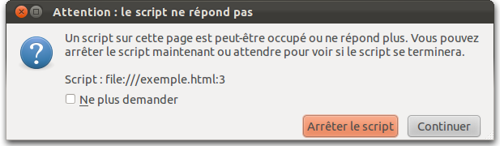

HTML5 web-worker : Le monde parallèle du JavaScript
Introduction
Dans ce qu'on nomme le HTML5, de nombreuses nouvelles fonctionnalités ont été ajoutées au JavaScript. Parmi celles-ci se trouvent les web-workers ou la possibilité d'exécuter du code en parallèle en JavaScript.
Effectivement depuis sa création, le JavaScript souffre d'un défaut de taille : il est mono-thread !
Qui n'a jamais vu ses pages ne répondant plus pendant un certain temps ?
Qui n'a jamais vu ses animations saccader lorsqu'un autre script démarre ?
Qui n'a jamais vu son super code être coupé par une alerte invitant l'utilisateur à interrompre le script ?

Délai d'exécution d'un script atteint.
Dans ce tutoriel, nous allons voir comment résoudre ces problèmes, en réalisant des exécutions de code en simultané.
Nous verrons absolument tout ce qui est en rapport avec les workers en JavaScript.
Pour bien comprendre ce tutoriel, il est nécessaire d'avoir une connaissance solide du JavaScript. La maitrise du fonctionnement asynchrone et la manipulation d'objet est le strict minimum.
Le fait que ce tutoriel traite de fonctionnalités HTML5 implique que seuls les navigateurs récents (Firefox 3.5, Chrome 3, Opera 10.60, Internet Explorer 10, …) pourront les supporter. Toutefois selon les navigateurs certaines fonctionnalités sont plus ou moins bien supportées. Le dernier chapitre est dédié à ce sujet.